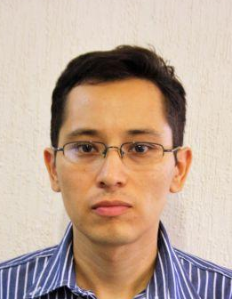
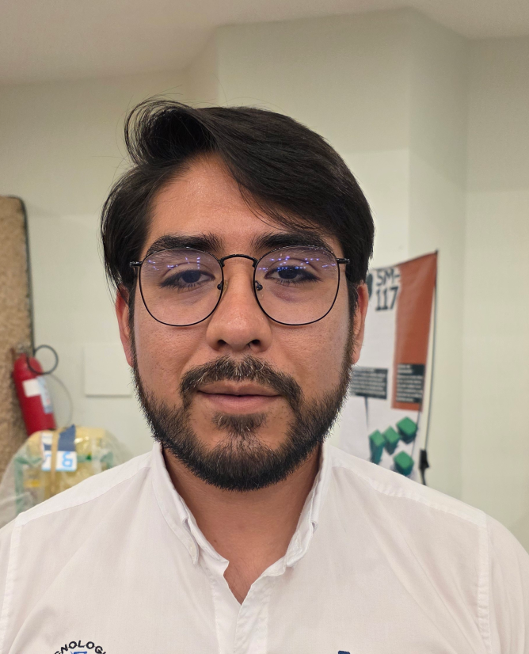
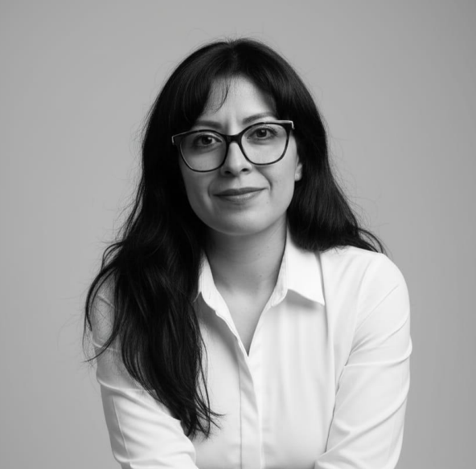
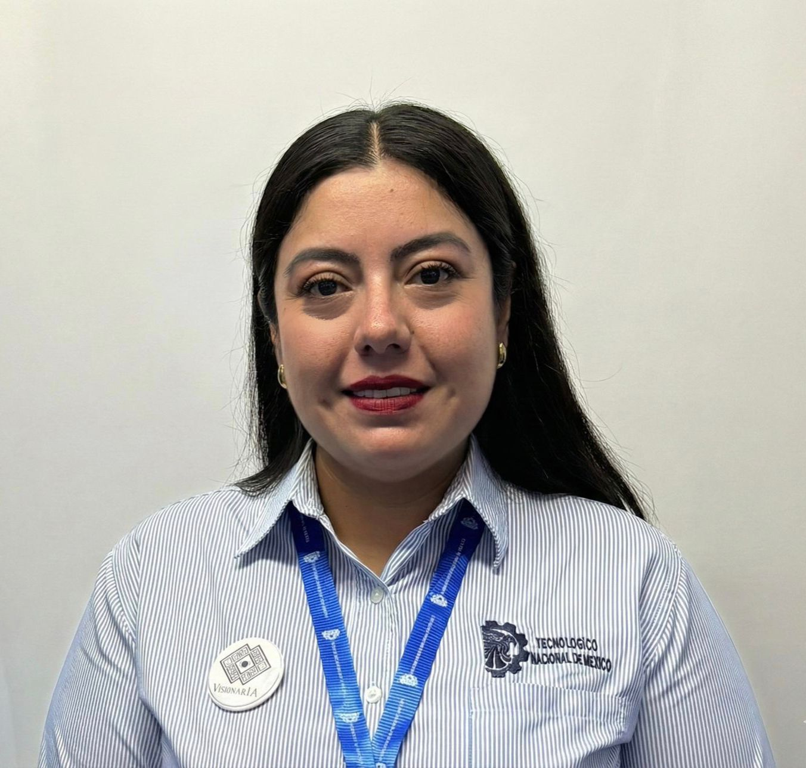
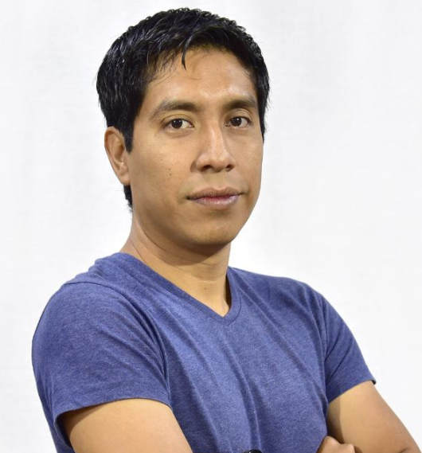

TURIX DYNAMICS
Diagnosis & Control Group
Home
Academic Staff
Ph.D. Students
Master Students
Projects
Publications
Software
ACADEMIC STAFF
Our Research Team
Dr. Francisco Ronay López Estrada /SNII 2
Full Professor / Head of Group / Robotics and FTC
View Profile

Dr. Guillermo Valencia Palomo / SNII 2
Researcher / Model Predictive Control
View Profile
Dr. Ildeberto de los Santos Ruiz /SNII 1
Researcher / Machine Learning
View Profile
Dr. Víctor Estrada Manzo / SNII 1
Researcher / Covex Control
View Profile
Dr. Raúl Villafuerte Segura / SNII 2
Researcher / Time-delay systems
View Profile
Dra. María Eusebia Guerrero Sánchez
Researcher/ SNII 1/ Passivity control
View Profile
Dr. Omar Hernández González / SNII 1
Researcher / Time-Delay Observers
View Profile

Dr. Armando Fragoso Mandujano / SNII 1
Posdoctoral Researcher / Mechanical Design and Computer Vision
View Profile
Dr. Jesús Medrano Hermosillo / SNII 1
Researcher / Power Electronics and control
View Profile

Dra. Alma Alejandra Luna Gómez
Researcher/ Telecommunications
View Profile

Dra. Sheyla Karina Flores Guirao
Researcher/ Business plan
View Profile
Dr. Samuel Gómez Peñate /SNII 1
Researcher /Fault Diagnosis
View Profile

Dr. Manuel de Jesús López Pérez / SNII C
Researcher/ Electric Vehicles
View Profile